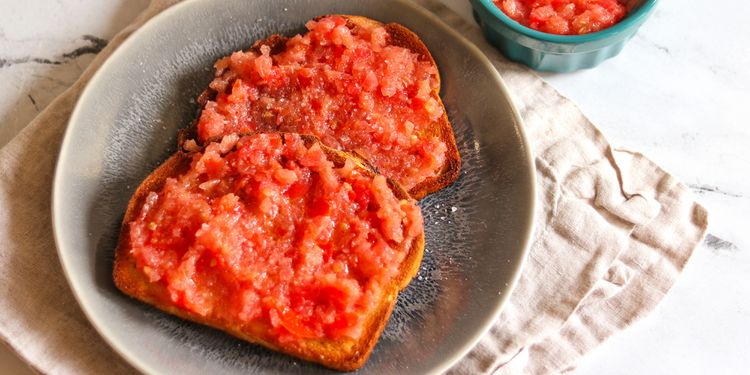

Home

Tomato Bread
Description
Bread with tomato, known as **"pa amb tomàquet"** in Catalonia, is a traditional dish from Spanish cuisine, simple and delicious. It consists of slices of toasted bread rubbed with garlic and ripe tomato, seasoned with olive oil and a pinch of salt. It can be served on its own or paired with cured meats, cheeses, or ham. It’s a light, healthy, and highly appreciated option as a starter or snack.
Ingredients for 1 person
- 1 large tomato, chopped
- 2 slices crusty bread
- 1 clove garlic, halved
- 1 tablespoon extra-virgin olive oil, or to taste
- sea salt to taste
Steps
- Place tomato in a blender; blend until smooth.
- Toast the bread until browned, 1 to 3 minutes. Rub each slice of toast with garlic; this is easier to do if the peel is left on.
- Top each slice of toast with pureed tomato. Drizzle with olive oil and sprinkle with salt.